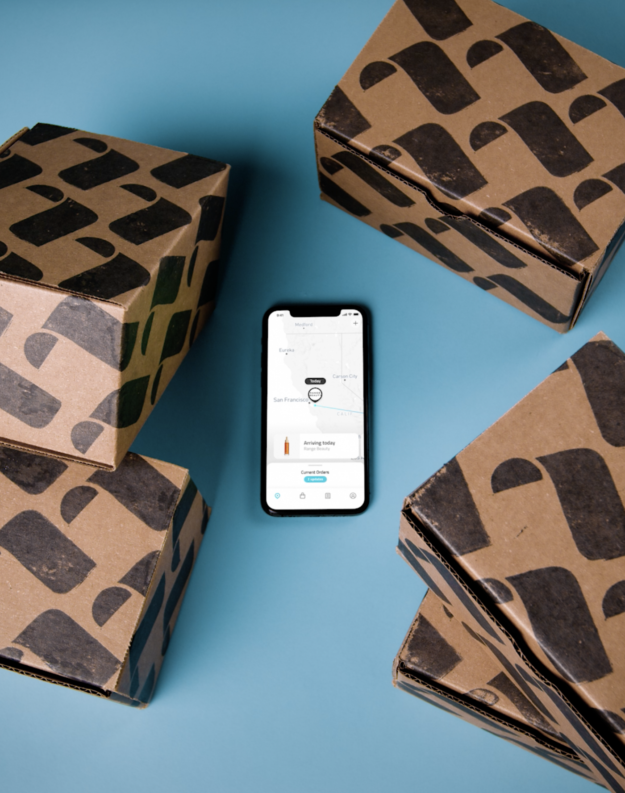
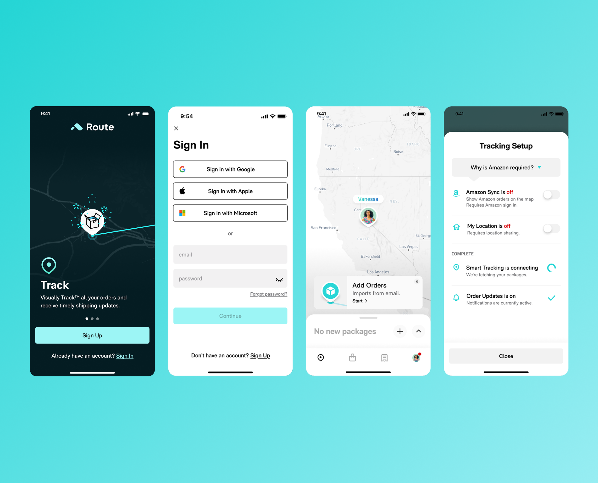
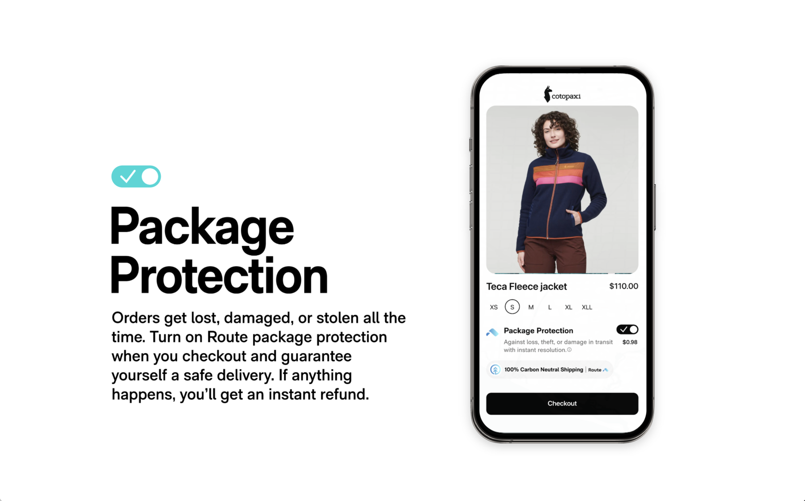
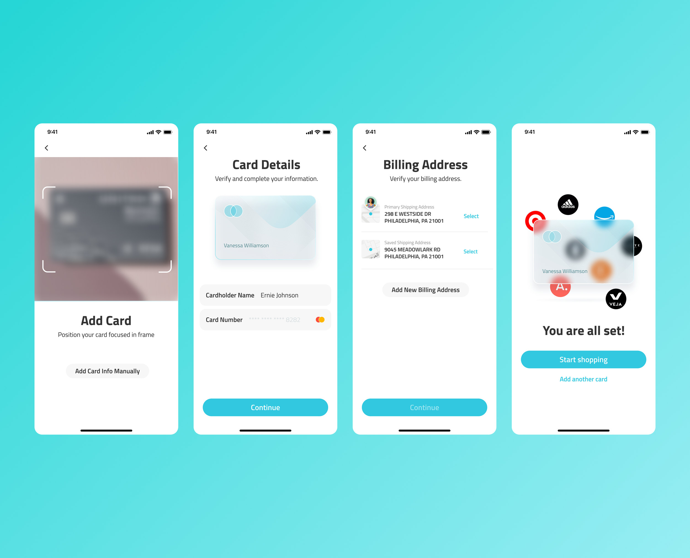
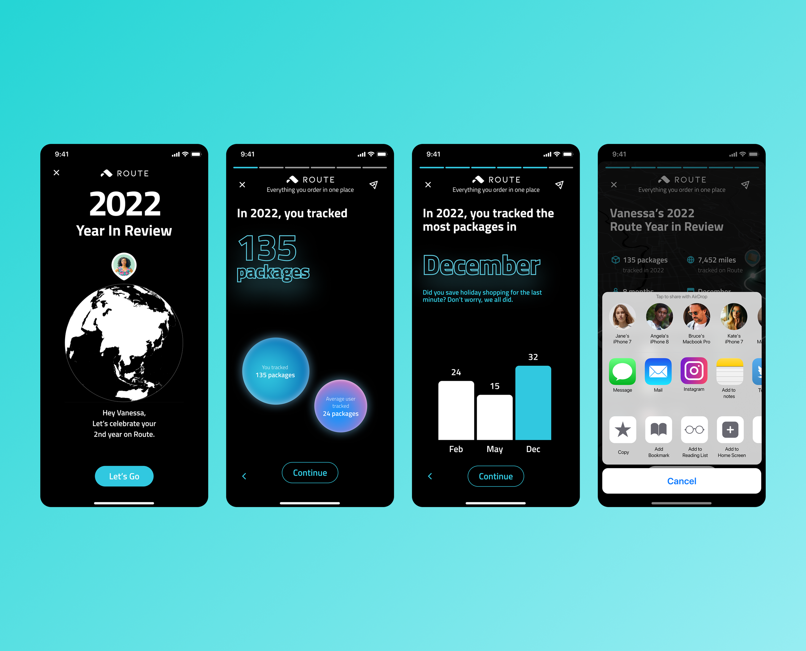

I joined a 5-person design team to help bring online shoppers out of their inbox notifications and into an app that let them track, shop, and resolve shipping issues in one place — shipping everything from high-engagement features to first-party iOS and Android design systems, delightful easter-egg animations, interactive kiosk experiences for branded events, and yes — a billboard in Time Square.

01 · Onboarding
Led design of user onboarding experiences and experimentation — testing variations to find the flow that got new users to their first "aha" moment fastest.

02 · Checkout
Led design for the in-app checkout experience — a universal shopping cart, post-purchase add-ons like Package Protection, and the surrounding shopping flow that turned Route from a tracking utility into a shopping destination.


Package Protection — a checkout add-on covering loss, theft, or damage in transit
03 · Add Card
Led design for payment linking, including prototyping the interactive animations that made adding a card feel fast and trustworthy rather than like friction to push through.

04 · Year in Review
Led design and animation on Route's year-end customer celebration — pairing personal package stats with social sharing and brand recommendations. This one grew into its own project — see the full case study for the concept work, A/B testing, and year-over-year redesign.
